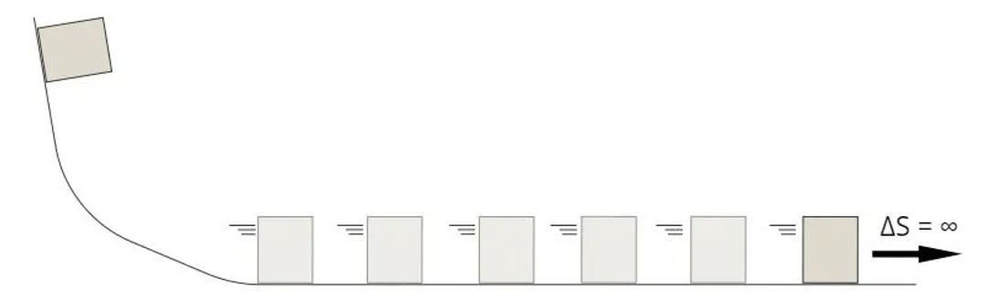
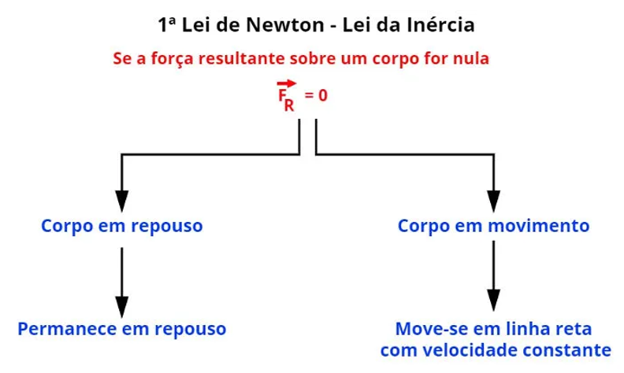

Primeira Lei de Newton
A primeira Lei de Newton ou Lei da Inércia, propunha que um corpo tende a permanecer em repouso ou em movimento retilíneo uniforme(MRU). Ele não mudara apenas se a resultante das forças existentes sobre ele não seja mais nula.
Sua inspiração:
Galileu Galilei foi o primeiro a estudar essa ação, para ele, o corpo ter movimento era necessário uma força constante que excitava a movimenta-se. Galileu também foi o primeiro a perceber que um corpo inicialmente em repouso, para ser colocado em movimento seria necessário uma ação de força. Porém ele não tinha a tecnologia necessária que pudesse perceber a inércia nos corpos. Então decidiu fazer experimentos mentais. Logo o físico imaginou uma superfície perfeitamente polida, que não exerceria atrito com algum corpo que fosse colocado sobre ela. O seu raciocínio foi que: um corpo colocado em movimento nessas superfície extremamente lisa nunca pararia.
Galileu concluiu que se não houvesse interferência de uma força contraria ao movimento como o atrito o corpo desloca-se em linha reta infinitamente.
Porém, logo depois, Isaac Newton propôs a lei da inércia, concedendo definições matemáticas com precisão de acordo com a sua segunda lei. Levando Newton a relacionar a inércia de um corpo com a força resultante dele e com a sua aceleração obtida.
A primeira Lei De Newton: Princípio da Inércia
“Todo corpo continua em seu estado de repouso ou de movimento uniforme em uma linha reta a menos que seja forçado a mudar aquele estado por forças aplicadas sobre ele.” NEWTON, Isaac, 1687
Inércia é uma virtude da matéria de medida de resistência que um corpo adquire ao ser acelerado. Quanto maior é a inercia, maior será a força necessária para alterar o estado do movimento do corpo. A inércia pode ser mediada em quilogramas (kg) de acordo com o Sistema Internacional de Unidades.
Então, quanto maior a massa, maior a inércia.
Referencial inercial:
Para descrever um movimento ou falta dele é necessário caracterizar o referencial da análise. Por isso existe o referencial inercial, ele é um sistema onde o válido é o principio da inércia: Sistema de referência em repouso ou em movimento retilíneo uniforme.
Esse sistema é o que torna válido o principio da inércia proposto por Newton, pois relaciona-se de um sistema referencial onde não possui aceleração de acordo com os corpos fixos, descreve o movimento de um corpo em equilíbrio.
No sistema que o corpo permanece em repouso ou movimento retilíneo uniforme, quando não existe força ou várias forças sobre o corpo, logo esta livres da ação de forças.
Exemplos:
-
Freiar o carro
Quando se freia bruscamente um carro ou outro tipo de automóvel, somos arremessados para frente e para trás, o que sentimos seria uma força nos movendo, já que estamos propensos a permanecer em repouso ou movimento retilíneo uniforme. Por isso é tão importante manter-se de cinto.
A não ser que você queira ter a linda experiência de ser arremessado. -
Ônibus
Um passageiro em pé dentro de um ônibus que acelera de repente, tende a ter o seu corpo lançado para a parte de trás do ônibus, para manter o seu estado de repouso. E quando o ônibus frear subitamente, o seu corpo é projetando para frente do ônibus, mantendo o estado de movimento retilíneo uniforme.
-
Ônibus e bola
Se uma pessoa que está dentro de um trem ou ônibus com um a velocidade constante e jogar uma bola de golfe para cima, por exemplo, a bola cairá em suas mãos. Isso mostra que a pessoa, a bola e o seu meio de locomoção estão se movendo na mesma velocidade.